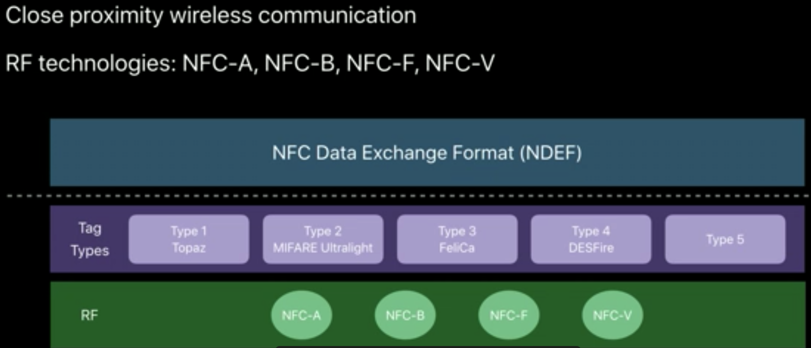

全称 Near Field Communication （近场通讯），这个技术由非接触式射频识别（RFID）演变而来，由飞利浦半导体（现恩智浦半导体公司）、诺基亚和索尼共同研制开发，其基础是RFID及互连技术。近场通信（Near Field Communication,NFC）是一种短距高频的无线电技术，在13.56MHz频率运行于10厘米距离内
它是廉价的、被动式的RFID（射频识别）Tag,粘贴或内嵌如产品，包裹，促销品及许多其他实物，甚至像电影里一样嵌入皮肤。那么问题又来了RFID Tags 是什么？
它由耦合元件及芯片组成，每个RFID标签具有唯一的电子编码（全球唯一哦😯），附着在物体上标识目标对象，俗称电子标签或智能标签。RFID电子标签：有源标签，无源标签，半有源半无源标签。普通用的地铁卡就是无源标签。 什么编码这么牛X, 全球唯一？是EPC编码
EPC（Electronic Product Code）即电子产品编码，是一种编码系统。它建立在EAN.UCC（即全球统一标识系统）条型编码的基础之上，并对该条形编码系统做了一些扩充，用以实现对单品进行标志。 它是下一代产品标识代码，它可以对供应链中的对象（包括物品、货箱、货盘、位置等）进行全球唯一的标识。EPC 存储在RFID标签上，这个标签包含一块硅芯片和一根天线。读取 EPC标签时，它可以与一些动态数据连接，例如该贸易项目的原产地或生产日期等。EPC所标识产品的信息保存在EPCglobal网络中，而EPC则是获取有关这些信息的一把钥匙
NFC实际上是一组不同的标准和协议。所有的标准共存，并用于不同的目的。 NFC text可归纳为5类，type1~type5.每一个类型对应于一个不同的标准。 NFC Forum定义了NFC Data Exchange Format(NDEF)用来作为不同的NFC text类型数据交换的通用标准方式 
此模式可以读取NFC Tag,也可写入Tag数据。（可以想象手机给地铁卡充值，它能读取卡内信息，也能写入数据），苹果给出的使用的场景1.连接用户到位置或上下文相关的内容2.连接硬件设备3.仓库库存追踪。
将两个具备NFC功能的设备链接，能实现数据点对点传输，如下载音乐、交换图片或者同步设备地址薄。
可以将具备NFC功能的设备当做只能卡或者IC卡，比如地铁卡，信用卡，门禁卡。
在NFC Tag(它是一种廉价、被动式的RFID tag, 就是一个集成电路)中有天线与电路。当拿具备NFC功能的手机或其他读取器靠近时，手机或读取器发射高频电磁波（射频信号），引发Tag内的电路产生感应电流（卡内没有电源，全靠读取器发射的电磁波产生电流驱动），Tag利用产生的电流发射出Tag内存储是数据
2017年，WWDC正式发布了iOS11,在SDK中首次开放了NFC功能,开发者可通过Core NFC FrameWork 使用NFC功能。此次发布的版本支持的功能非常保守，只支持 NFC Tag Reading 功能
iPhone 7 及后续发布机型（虽然iPhone 6开始已经有NFC硬件，但是Apple 出于某些原因，6，6plus不开放此功能）
但是
- 苹果x之前的设备不支持后台扫描 iPhone X and earlier devices don’t support background tag reading.
- Background tag reading doesn't support custom URL schemes. Use universal links instead.后台扫描不支持自定义URL
支持的Scheme
| URL Scheme | Example |
|---|---|
| Website URL (HTTP/HTTPS | https://www.example.com |
| mailto:user@example.com | |
| SMS | sms:+14085551212 |
| Telephone | tel:+14085551212 |
| FaceTime | facetime://user@example.com |
| FaceTime Audio | facetime-audio://user@example.com |
| Maps | http://maps.apple.com/?address=Apple%20Park,Cupertino,California |
| HomeKit Accessory Setup | X-HM://12345 |
| For more information on URL schemes | see Apple URL Scheme Reference |
支持通用链接Use Universal Links
- In order to avoid unintentional tag reading, the system reads tags in the background only when the user's iPhone is in use. Also, be aware there are times when the display is on and background tag reading is unavailable, such as if:
为了防止误操作一下5种情况NFC在后台不可用
- The device has never been unlocked.
- A Core NFC reader session is in progress.
- Apple Pay Wallet is in use.
- The camera is in use.
- Airplane mode is enabled.
Privacy - NFC Scan Usage Description//Start a Reader Session
_nfcSession = [[NFCNDEFReaderSession alloc] initWithDelegate:self queue:nil invalidateAfterFirstRead:YES];
## 设置提示信息
_nfcSession.alertMessage = @"请靠近要扫描的物体";
//开始扫描
[_nfcSession beginSession];
## Adopt the Reader Session Delegate Protocol
#pragma mark - NFCNDEFReaderSessionDelegate
- (void)readerSession:(NFCNDEFReaderSession *)session didDetectNDEFs:(NSArray<NFCNDEFMessage *> *)messages{
##Read an NDEF Message
}
- (void)readerSession:(NFCNDEFReaderSession *)session didInvalidateWithError:(NSError *)error{
## Handle an Invalid Reader Session
// NFCReaderError
}